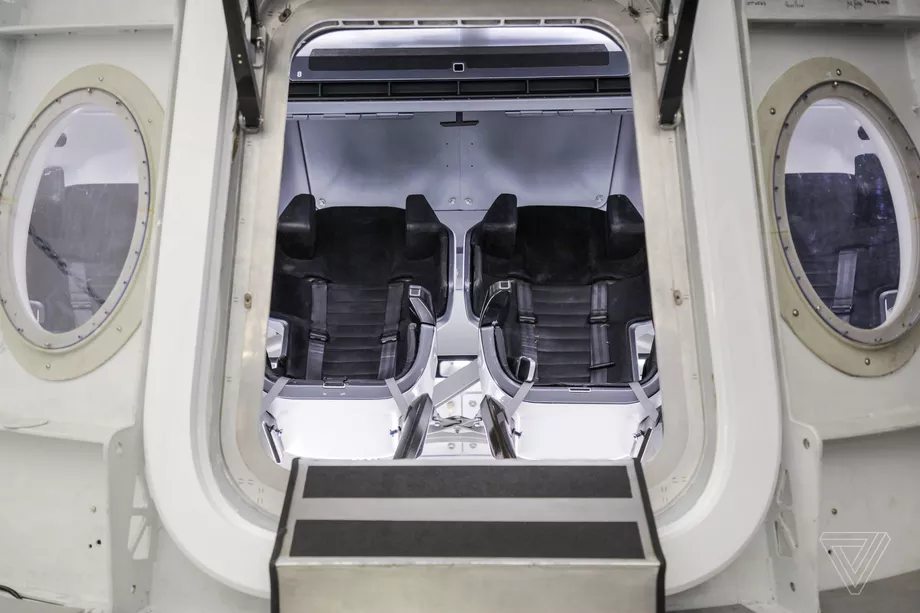
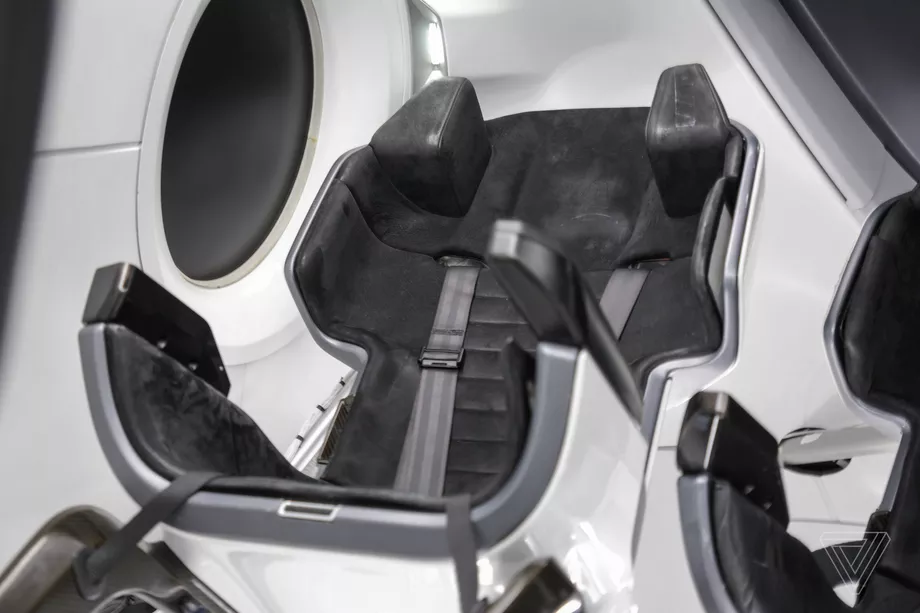

TECH
HOW SPACEX IS TRAINING NASA ASTRONAUTS TO FLY ON THE COMPANY’S DRAGON CAPSULE
High-fidelity simulators are key
JULI 7, 2018

SpaceX has its first passenger crews all picked out, their flight dates are set, and now it’s time to prepare them for the trip to space. On Monday, SpaceX president Gwynne Shotwell hosted the first four NASA astronauts who will be riding into space on the company’s new passenger spacecraft, the Crew Dragon, which is being built for NASA’s Commercial Crew Program. And the company gave press their first peek at the tools the astronauts will use to train for these inaugural flights.
All other interactions are meant to happen on the capsule’s three touchscreens, which will respond to the crews’ touch through their spacesuit gloves. The main purpose of the screens is to provide orbital flight tracking. Astronauts will be able to adjust the displays to look at different views of the Earth, showing where their capsule is located on the trip to orbit. They also have the option to switch to an attitude control view on the screens, which will allow them to manually steer the Crew Dragon in space. A simple tap will ignite the vehicle’s thrusters, slightly altering its course. That shouldn’t be necessary, though, as the Crew Dragon is meant to automatically dock with the space station. But the option is there if needed.
However, there’s one key part of the interface that is neither a button nor a touchscreen command. It’s a large handle in the center of the console with the word “EJECT” next to it. It’s something that the astronauts will hopefully never need to touch. But if the rocket carrying the Crew Dragon were to malfunction during flight, astronauts can twist and pull this handle, igniting engines on board the capsule that will carry them away from danger. The handle is meant to be the last line of defense for astronauts. SpaceX has programmed the ship’s onboard computer to detect any anomalies that would require a speedy escape, hopefully preempting the need for astronauts to intervene.
Dragon is almost complete automation. If all goes well during flight, the astronauts will mostly sit back and enjoy the ride. However, spaceflight requires preparation for even the most dire scenarios, which is where SpaceX’s next major tool comes in: a simulator that essentially re-creates the entire inside of the capsule, from the seats to the windows. Inside, astronauts train for all kinds of spaceflight situations from a normal flight to the unthinkable. SpaceX will put them through increasingly complex failure scenarios, such as fires or depressurization, and the astronauts will have to communicate with ground control to see if they need to fix something inside the capsule. It even has a sunlight simulator — a lamp — that shines through the window to re-create how the Sun will look during flight.
As comprehensive as it is, the one thing the simulator can’t do is re-create what it will feel like on the rocket. The ride on top of SpaceX’s Falcon 9, which will carry the crew capsule to space, will be a bumpy one, in which astronauts will pull extra Gs and experience intense vibrations. To simulate that, the astronauts will actually sit on a giant plate used to vibrate spacecraft, in order to get a feel for the launch.
Dragon is almost complete automation. If all goes well during flight, the astronauts will mostly sit back and enjoy the ride. However, spaceflight requires preparation for even the most dire scenarios, which is where SpaceX’s next major tool comes in: a simulator that essentially re-creates the entire inside of the capsule, from the seats to the windows. Inside, astronauts train for all kinds of spaceflight situations from a normal flight to the unthinkable. SpaceX will put them through increasingly complex failure scenarios, such as fires or depressurization, and the astronauts will have to communicate with ground control to see if they need to fix something inside the capsule. It even has a sunlight simulator — a lamp — that shines through the window to re-create how the Sun will look during flight.
As comprehensive as it is, the one thing the simulator can’t do is re-create what it will feel like on the rocket. The ride on top of SpaceX’s Falcon 9, which will carry the crew capsule to space, will be a bumpy one, in which astronauts will pull extra Gs and experience intense vibrations. To simulate that, the astronauts will actually sit on a giant plate used to vibrate spacecraft, in order to get a feel for the launch.